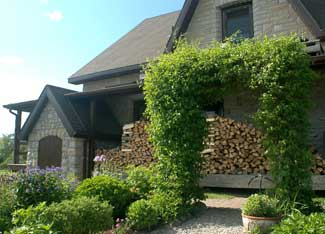

Trellises make ornamental gardens more beautiful and food gardens more bountiful. For little money, these garden structures coax more plant growth from a given area. Growing crops or flowers that climb also will add a striking visual element to your garden.
Building your own trellis is a creative adventure. Small saplings, logs, milled lumber, metal rods and even plumbing pipe can all be made into a terrific trellis. The basic idea is to create some kind of a ladder or matrix for plants to climb.
Perhaps the quickest method of making a trellis is to use cattle or hog panels made from galvanized steel rods (about a quarter inch diameter). These rods are already welded together to form a mesh panel, usually about 16 feet long. You can simply drive fence posts into the ground and attach the panels as if you were making a fence. Or you could get creative and make arched trellises by bending the panels.
If you’re set up for welding, think about conical steel trellises. Using quarter-inch or three-eighths-inch diameter mild steel rod, it’s easy to build tall, elegant, cone-shaped structures that fit over large pots or directly in the garden. Use four, six or eight rods, depending on the diameter of the trellis. You can paint these if you like, but it’s not necessary. Rusty steel looks quite good in the garden if it’s part of a tastefully crafted structure. And you’re probably not going to see the steel rod much anyway (painted or not). Plants love a conical trellis, and many climbing species soon cover it completely.
Can you solder? Copper water pipe (half- or three-quarter-inch diameter) makes a terrific plant support. Create an octagon from eight straight lengths of pipe connected with tee fittings. Extend eight legs down from these tees, and then park the structure over support-dependent species such as delphiniums or peonies.
Arbors and trellises made from wood frequently rot unnecessarily (even at my place). My main garden regret right now is an arbor I built over a pathway in 1995 (see photo). Since then two scandens have been establishing themselves beautifully over this entire structure, which has now weakened enough to wobble. I built it from rot-prone balsam fir poles cut from my forest, preferring to leave the cedars to grow. That was a mistake. Now I’m faced with the job of building another arbor around the first one, then training the scandens around the new wood before the old completely rots away.
Always use corrosion-resistant metal hardware to hold parts together. Stainless steel is king, but hot-dipped galvanized screws and nails work well, too. Twenty years of experience has taught me the hard way that plain steel or electro-plated fasteners rust fast and fail quickly - sometimes in less than five years.
Are you building a trellis from milled lumber? Then use glue to supplement the nails and screws. Over the last 10 years the quality and availability of weatherproof, outdoor glues has increased to the point where using it is a no-brainer. A few daubs of type III PVA (Polyvinyl acetates) glue or a polyurethane adhesive, such as Gorilla Glue, will add tremendous strength to any wooden trellis or arbor. The thinner the wood that you’re working with, the more important glued-and-screwed joints become.
Today more than ever, we need to build things that last. And while the forces of rot, corrosion, wind and frost will quickly destroy any trellis not designed to endure, doing things right can double the life of your trellis. Not only does this make the most of the time and resources you’ve invested in the structure, but it’s especially important if your trellis or arbor will be supporting a long-lasting perennial.
For more information on building and using trellises, check out these articles:
Use a Trellis to Create More Garden Space|
 STEVE MAXWELL This trellis was built of balsam fir, but cedar would have been a better choice to help it last longer. |
|
|